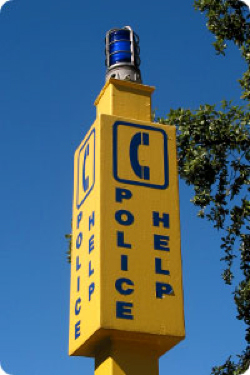
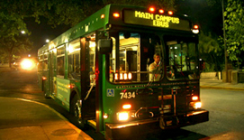

Risk Reduction
Risk reduction provides individuals with strategies to decrease vulnerability to interpersonal violence and increase safety. VAV believes the root cause of interpersonal violence is when a person makes a choice to cause harm. This means that no matter what the context or relationship between these people, violence is never the fault of the survivor. However, there are some concrete practices which help increase the likelihood of everyday safety for ourselves and people we care about.
One way to proactively reduce risk is to have a plan and look at your options. This may include knowing your environment, knowing safe ways to get home, increasing security at home and being prepared with resources should anything happen to you or someone you know.
Trust Your Gut
On- and Off-Campus Safety
Know What You're Drinking and How Much
Alcohol and Drug-Facilitated Violence
Self-Defense Courses
A Note on Pepper Spray and Other Weapons
BeVocal - Bystander Intervention
For more information, please see CMHC's page, How to Be Assertive.

If you are worried or scared on campus, consider finding the closest outdoor emergency call box. There are 120 installed on the 40 Acres. For more information and a full map, please see: http://www.utexas.edu/police/services/callbox.html
For more information on campus safety and security, please visit: http://www.utexas.edu/safety/
SURE Walk

UT Shuttles and Capital Metro E-Bus
UT Shuttle Schedule, Map and Info: The E-Bus is a late night service that picks up passengers from UT, west campus, and Riverside areas and provides a safe alternative to driving to and from Austin's entertainment district during weekend evenings (Thursday - Saturday from 8:30 p.m. - 3:00 a.m.).
http://www.utexas.edu/parking/transportation/ebus/
If you have a smart phone, consider downloading the app, Hail a Cab Austin.
If you decide to walk alone, consider staying in well-lit areas where there are other people around. It is recommended that you keep your phone in an accessible place but try not to talk/text and walk at the same time in order to remain aware of your surroundings. If you are concerned about getting home, you may want to contact your roommates or close neighbor to let them know you're on your way. You may want to consider downloading a safety app if you have a smart phone.
Safety Applications for Smart Phones
What can you do to protect yourself while drinking?
Know Your Line, an initiative of the Health Promotion Resource Center, reports that 77% of female and 60% of male UT students said they drink moderately or not at all. Choosing to drink moderately or not drink at all is associated with higher GPA. Know Your Line recommends a few tips for partying smart: including setting a limit, staying hydrated, and having a plan to get home.
Know the Signs of Alcohol Overdose Alcohol poisoning is a serious and life threatening medical emergency that results from drinking a harmful amount of alcohol. Both students who choose to drink and those who choose not to drink may encounter alcohol emergencies during their time at UT.
Student Amnesty for Alcohol Emergencies Sometimes students are afraid to seek emergency medical care when alcohol poisoning is suspected because they do not want to get themselves or others in trouble. In order to encourage students to seek emergency medical care, the University has instituted Student Amnesty for Alcohol Emergencies. This policy means that current UT students can avoid formal University disciplinary action and the creation of a formal disciplinary record when they call for help for an alcohol medical emergency.
Brief Alcohol Screening and Interventions for Students (BASICS) BASICS is designed to assist students in examining their own drinking behavior in a judgment free environment. BASICS is not an abstinence-only program. Instead, goals of the program are selected by the student and aimed at reducing risky behaviors and potential harmful consequences.
Counseling and Mental Health Center Individual Consultations Students can confidentially speak with a licensed professional counselor about their own or someone else's use of alcohol and other drugs.
Center for Students in Recovery The mission of The Center for Students in Recovery is to provide a supportive community where students in recovery and in hope of recovery can achieve academic success while enjoying a genuine college experience free from alcohol and other drugs.
What are some signs of being drugged?
What should I do if I think I have been drugged?
Learn more about the side effects, withdrawal symptoms and dependency of party and other drugs at http://www.healthyhorns.utexas.edu/partydrugs.html
Bystander intervention is choosing to respond to a potentially harmful situation or interaction in a way that could positively influence the outcome.
A potential sexual assault can look like a person taking advantage of another either through the use of alcohol and other drugs, physical dominance or threats. It may also look like minimizing the issue of sexual violence through rape jokes ("I raped that test"), minimizing an experience of sexual violence ("it was just a misunderstanding") or blaming someone for their experience of violence ("they were asking for it").
For more information about BeVocal and how to get involved please see www.wellnessnetwork.utexas.edu/BeVocal
For more information on how to support a survivor please see How to Support a Survivor
Together we can build a safer campus
Trust Your Gut
The most important tool of self-protection is your own instincts. If it feels wrong, it is wrong. You do not need an excuse to physically leave a location or to stop engaging with someone who you are unsure of. Some people are scared to act on their intuition because they may come off as rude. An alternative to this is to practice being assertive. Many people avoid being assertive because they confuse being assertive with being aggressive. Aggressiveness violates the rights of others. Assertiveness is respectful communication of your own rights.
On-Campus Safety
Off-Campus Safety
Over 86% of UT Austin students live off-campus and are faced with important safety decisions on a daily basis. Whether you are looking for an apartment or have lived in off-campus housing for years, the Live Safe, Guide for Off-Campus Housing: offers advice to help you: http://www.utexas.edu/safety/livesafe/
Get Home Safely
One way to increase safety is to walk or ride with people you trust. If you are on campus, you may want to consider accessing SURE Walk provided by Student Government.
Website: utsg.org/projects/sure-walk/
Phone: 512-232-9255
Email: orderasurewalk@gmail.com
Make sure you know the schedule of buses. As you know, your UT ID doubles as a free bus pass. Late-nights and weekends you can access night owl buses or the E-Bus.
http://www.utexas.edu/parking/transportation/shuttle/index.php
Self-Defense Courses
UTPD RAD's free 16-hour women's self defense class
The Rape Aggression Defense (RAD) System is a program of realistic, self-defense tactics and techniques. It is a comprehensive course for women that begins with awareness, prevention and risk reduction, and incorporates hands-on defense training. For more information and to register for an upcoming class, please visit: http://www.utexas.edu/police/rad/
Know What You're Drinking and How Much
Alcohol doesn't cause sexual assault but it is a factor in more than 70% of cases. Drinking can lower inhibitions, making it more difficult to resist sexual aggression and other forms of violence. Alcohol directly impacts decision making capacity, making it more difficult to reduce risk. If you do choose to drink, pace yourself and encourage your friends to party smart. Knowing what you're drinking and how much of it can increase your overall safety.
Resources for students concerning alcohol:
Alcohol and Drug-Facilitated Sexual Assault
Alcohol and drugs such as Rohypnol, Ketamine, and GHB are never the cause of sexual assault, but they can be used to intentionally make someone more vulnerable to unwanted sexual advances and aggression. These drugs often result in some level of amnesia, survivors frequently report little to no memory of what happened.
A note on carrying pepper spray and other weapons
Defensive sprays such as pepper spray along with personal protection weapons like tasers or concealed handguns are an ongoing discussion among advocates. While they can offer increased protection in some instances, it is important to ensure that users are properly trained so as not to put themselves in danger and/or have the weapon used against them. Carrying these types of weapons without proper safety training can provide a person with a false sense of security. For additional information, please consider taking a UTPD RAD self-defense course, which covers this issue.
BeVocal: The Bystander Intervention Initiative of the University of Texas at Austin
BeVocal is a university-wide initiative to promote the idea that individual Longhorns have the power to prevent high-risk behavior and harm.